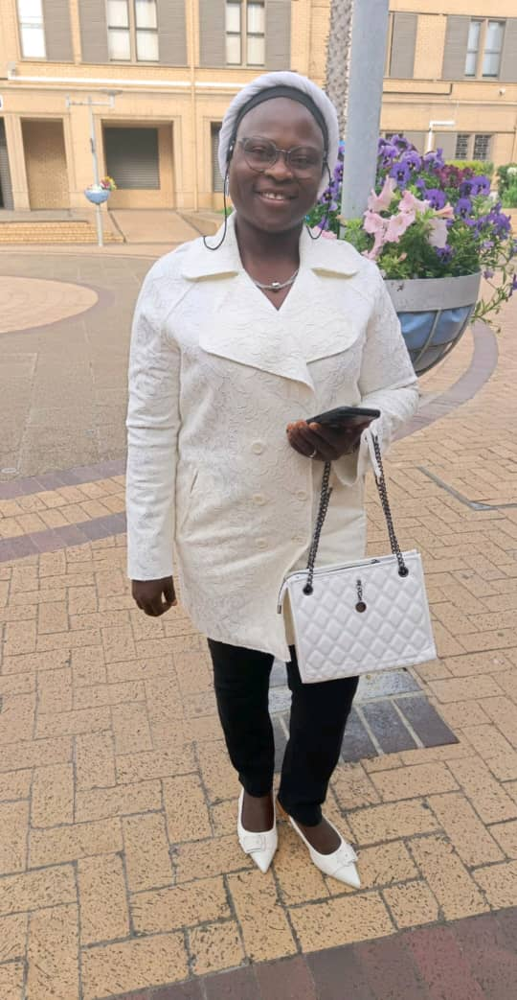

Mrs. Adenuga Idowu Oluwabunmi
General SecretaryI am a dedicated, responsible, and committed woman who believes strongly in the power of unity and mutual support among women.
As General Secretary, I am responsible for keeping accurate records, coordinating communication, documenting meetings and activities, and supporting the smooth administration of the group. I also believe that effective leadership requires listening to others, respecting different opinions, and working together towards common goals.
My goal is to serve with integrity, humility, dedication, and transparency, while helping to make LOGPAH stronger and more impactful. In addition to my administrative leadership, I am an entrepreneur focusing on snacks and cake baking with two decades of experience (founder of A-Series Creative World Ventures).